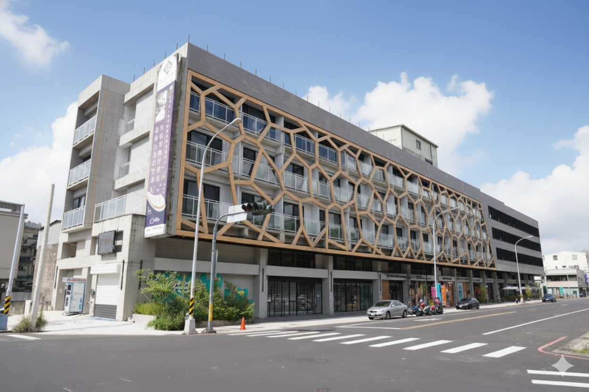

從中央函釋、地方規定到申請流程，協助業主把風險前置處理。

Leadership & Reliability
從基地評估、法規判斷到施工整合，提供一站式建築顧問。
同時關注設計品質、預算界面、施工可行性與營運需求。
作品、法規與表單可持續更新，讓資訊維護更穩定。
News & Press
最新動態
Services
服務項目
Selected Works
近期作品
Regulation Center
法規專區
Useful Links
好用連結
Contact

Leadership & Reliability
從中央函釋、地方規定到申請流程，協助業主把風險前置處理。
同時關注設計品質、預算界面、施工可行性與營運需求。
作品、法規與表單可持續更新，讓資訊維護更穩定。
News & Press
Services
Selected Works
Regulation Center
Useful Links
Contact
Case Study
Global Search